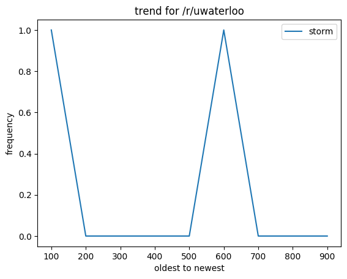

<h1>Data Analytics Tool for Reddit</h1>

<!-- ul>
	<li>temporary item</li>
	<li>temporary item2</li>
</ul> -->

<ul>
	{% for analyticsItem in allItems %}s
		<li>{{ analyticsItem.content}}</li>
	{% endfor %}
</ul>

<form action='/addAnalytics/' method='post'>{% csrf_token %}
	<input type='text' name='subreddit'/>
	<input type='text' name='keyword'/>
	<input type='submit' value='Add'>
</form>

<!--form action='/addAnalytics/' method='post'>{% csrf_token %}
	<input type='text' name='keyword'/>
	<input type='submit' value='Add Keyword'>
</form>-->



<body>tttzach.github.io</body>